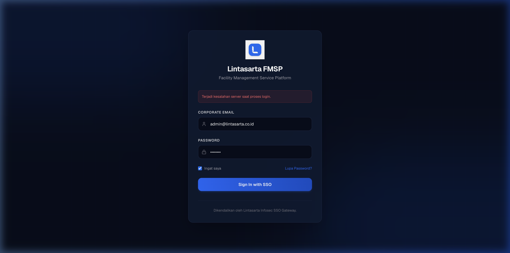
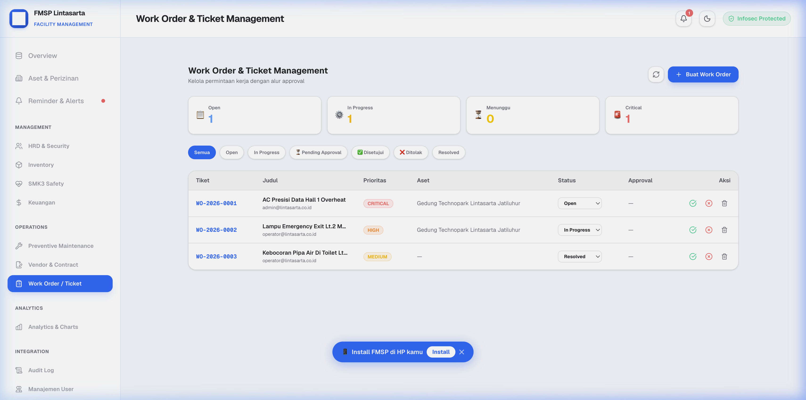
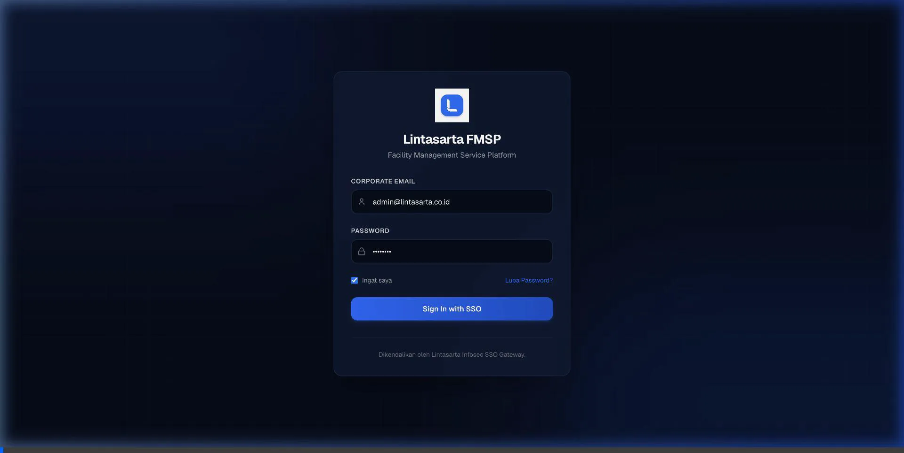
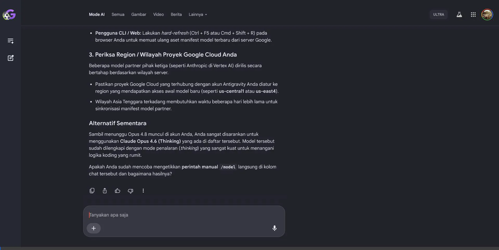

1. Pendahuluan & Gambaran Umum
Facility Management Service Platform (FMSP) Lintasarta adalah platform manajemen fasilitas berbasis web yang dirancang khusus untuk PT Aplikanusa Lintasarta. Platform ini mengintegrasikan pengelolaan aset fisik, dokumen legalitas, jadwal pemeliharaan preventif, inventaris gudang, keselamatan kerja (K3), ketenagakerjaan, keuangan, dan work order dalam satu sistem terpusat yang aman dan modern.
1.1 Latar Belakang Masalah
Sebelum implementasi FMSP, pengelolaan fasilitas dilakukan secara manual melalui spreadsheet terpisah. Hal ini menimbulkan masalah:
- Keterlambatan Perpanjangan Dokumen: IMB, SLF, asuransi, PBB seringkali terlambat diperpanjang karena tidak ada sistem pengingat otomatis.
- Kerusakan Tidak Terlacak: Tidak ada sistem tiket kerusakan (Work Order) yang terstruktur, mengakibatkan penundaan perbaikan fasilitas kritis (AC Presisi, Genset, Panel MDP).
- Over-budget Anggaran: Kesulitan melacak penggunaan anggaran operasional vs pagu RAB tahunan secara real-time.
- Data Terfragmentasi: Informasi aset, karyawan, dan vendor tersebar di berbagai file yang tidak saling terhubung.
1.2 Tujuan Platform
- Auto-Reminder Dokumen: Email alert H-30 sebelum dokumen legalitas expired.
- Preventive Maintenance & Work Order: Jadwal PM otomatis dengan alur approval tiket kerusakan yang terstruktur.
- Safety Stock Alert: Peringatan otomatis jika stok sparepart di bawah batas minimum.
- Real-time Budget Tracking: Pengeluaran terhubung langsung ke pos RAB dan memotong alokasi pagu secara otomatis.
- Keamanan Enterprise: Google SSO, JWT, RBAC 6 tingkat, rate limiting, dan audit trail lengkap.
1.3 Arsitektur Teknologi
| Komponen | Teknologi |
|---|
| Framework | Next.js 16 (App Router) + React 19 |
| Bahasa | TypeScript |
| Database | PostgreSQL + Prisma ORM 6.19 |
| Styling | Tailwind CSS 4 |
| Autentikasi | Google OAuth SSO + JWT + bcrypt |
| Email | Nodemailer 9 (SMTP) |
| AI Copilot | Ollama (Qwen 2.5) — Local LLM |
| Charts | Recharts 3 |
| Icons | Lucide React |
| Deployment | Fly.io (Region Singapore) + Docker |
| Push Notification | Web Push (VAPID) |
| QR Code | qrcode library (PNG generation) |
| Input Validation | Zod 4 (server-side + XSS protection) |
2. Keamanan Sistem & Autentikasi
2.1 Login & Google SSO (Single Sign-On)
FMSP Lintasarta mendukung dua metode autentikasi:
- Login Email & Password: Pengguna memasukkan email korporat dan kata sandi. Password di-hash menggunakan bcrypt dengan cost factor tinggi.
- Google SSO (Single Sign-On): Tombol "Sign in with Google" pada halaman login memungkinkan pengguna masuk dengan akun Google korporat (@lintasarta.co.id). Sistem memverifikasi Google ID Token melalui Google OAuth API, memvalidasi domain email, dan otomatis mencocokkan dengan akun FMSP yang terdaftar.
ℹ️ Catatan: Google SSO memanfaatkan Google 2-Step Verification (2FA) yang sudah aktif pada akun Google Workspace Lintasarta, sehingga memberikan lapisan keamanan tambahan tanpa konfigurasi MFA terpisah.

Gambar 2.1: Tampilan Halaman Login & Tombol Google SSO
Setelah autentikasi berhasil, sistem menghasilkan token JWT (JSON Web Token) yang disimpan di sisi klien dan disertakan pada setiap request API melalui header Authorization: Bearer <token>. Token memiliki masa aktif terbatas dan berisi informasi user ID, email, role, dan region.
2.2 Role-Based Access Control (RBAC) — 6 Tingkat
Sistem menerapkan RBAC yang ketat untuk membedakan hak akses. Hirarki peran:
| Role |
Aset & Dokumen |
Work Order |
Budget & RAB |
Admin |
Scope Data |
| SuperAdmin |
Full CRUD |
Full + Approve |
Full CRUD |
Semua Akses |
Nasional |
| Manager FMS |
Read All |
Approve/Reject |
Read + Approve |
User + Audit |
Nasional |
| Admin Pusat |
Full CRUD |
Create + Assign |
Read Only |
Terbatas |
Nasional |
| Admin Regional |
CRUD Region |
Create + Assign |
Read Only |
Tidak |
Region Tertentu |
| Admin Lokasi |
CRUD Lokasi |
Create |
Tidak |
Tidak |
Lokasi Tertentu |
| User / Viewer |
Read Only |
Update Status |
Tidak |
Tidak |
Sesuai Tugas |
Admin Regional dan Admin Lokasi hanya dapat melihat dan mengelola data aset yang berada di wilayah/gedung yang ditugaskan kepada mereka (region filter).
2.2.1 Struktur 4 Regional & Partisi Data
FMSP Lintasarta mengimplementasikan partisi data berbasis 4 regional yang mencerminkan struktur organisasi FMS Lintasarta di Indonesia:
| Regional |
Kode |
Cakupan Wilayah |
Kantor |
| Jakarta (Pusat) |
JKT |
DKI Jakarta & Kantor Pusat |
Kantor Pusat Lintasarta |
| Medan |
MDN |
Sumatera Utara & sekitarnya |
Kantor Regional Medan |
| Bandung |
BDG |
Jawa Barat, termasuk Jatiluhur |
Kantor Regional Bandung + Data Center Jatiluhur |
| Surabaya |
SBY |
Jawa Timur & sekitarnya |
Kantor Regional Surabaya |
Aturan Partisi Data
- SuperAdmin, Manager FMS, Admin Pusat: Melihat data seluruh regional (scope nasional). Tidak memiliki field region.
- Admin Regional: Melihat dan mengelola data hanya di regional yang ditugaskan. Contoh: Admin Regional Medan hanya melihat aset, dokumen, inventory, dan karyawan Medan.
- Admin Lokasi & User: Melihat data sesuai regional yang ditugaskan. Input data baru otomatis terikat ke regional mereka.
Mekanisme Filter Regional
Sistem menggunakan location-based string matching: field location pada aset, inventory, dan data operasional HARUS mengandung nama kota regional ("Medan", "Bandung", "Surabaya", atau "Jakarta") agar filter otomatis bekerja. Contoh lokasi yang valid:
- "Jl. Gatot Subroto No. 212, Medan" ✅
- "Data Center Room A, Jatiluhur — Regional Bandung" ✅
- "Kantor Surabaya, Gedung Lt. 2" ✅
Akun Standar per Regional
| Regional |
Email |
Role |
| Pusat | superadmin@lintasarta.co.id | SuperAdmin |
| Pusat | manager@lintasarta.co.id | Manager FMS |
| Pusat | admin@lintasarta.co.id | Admin Pusat |
| Medan | regional.medan@lintasarta.co.id | Admin Regional |
| Bandung | regional.bandung@lintasarta.co.id | Admin Regional |
| Surabaya | regional.surabaya@lintasarta.co.id | Admin Regional |
ℹ️ Penting: Jatiluhur secara organisasional masuk ke Regional Bandung. Aset dan personel di Jatiluhur dikelola oleh Admin Regional Bandung. Setiap regional memiliki gudang inventory, anggaran (RAB), dan vendor contract terpisah.
2.3 Proteksi Brute Force & Account Lockout
Untuk mencegah serangan brute force, akun pengguna otomatis dikunci selama 15 menit setelah 5 kali gagal login berturut-turut. Counter gagal login di-reset otomatis setelah login berhasil. Selain itu, sistem menerapkan rate limiting pada endpoint login dan SSO untuk mencegah request berlebihan.
2.4 Manajemen Pengguna & Reset Password
Halaman Manajemen Pengguna (sidebar: "Manajemen User") memungkinkan SuperAdmin/Admin untuk:
- Menambah staf baru dengan role, wilayah kerja, dan kata sandi awal
- Mengaktifkan/menonaktifkan akun tanpa menghapus data
- Menyetujui permintaan reset password dari staf (approval-based flow)
- Flag
mustChangePassword memaksa pengguna baru mengganti sandi pada login pertama
2.5 Audit Log Sistem
Halaman Audit Log mencatat setiap operasi penting secara otomatis, meliputi:
- Identitas pengguna yang melakukan aksi
- Tipe operasi: LOGIN, CREATE, UPDATE, DELETE, UPLOAD
- Resource yang diakses (modul/tabel)
- Alamat IP asal dan timestamp presisi
Admin dapat memfilter berdasarkan user, tipe aksi, atau rentang tanggal, serta mengunduh log dalam format CSV untuk keperluan audit compliance.
3. Modul Operasional Fase 1
3.1 Dashboard Overview
Halaman Overview adalah pusat informasi utama yang menampilkan:
- Headline Story: Total aset terkelola, nilai buku keseluruhan, dan narasi kondisi aset saat ini
- KPI Tiles: 4 kartu statistik — Kondisi Baik, Perlu Perhatian, Rusak, dan Dokumen Valid — dengan micro progress bar
- Grafik Komposisi: 3 horizontal bar chart menampilkan distribusi aset per tipe, per lokasi, dan nilai buku per kategori
- Tabel Urgensi: Daftar dokumen legalitas yang membutuhkan tindakan segera, diurutkan berdasarkan tanggal jatuh tempo
- Laporan PDF: Tombol download laporan compliance bulanan dalam format HTML/cetak
Dashboard di-refresh otomatis setiap kali halaman dibuka dan menampilkan data real-time dari database.
3.2 Manajemen Aset Fisik & QR Code
Menu Aset & Perizinan (sub-tab "Aset") digunakan untuk mengelola semua aset fisik Lintasarta:
- Registrasi Aset: Nama aset, tipe (Tanah/Gedung/Fasilitas/Kendaraan), lokasi, spesifikasi teknis (Merek, Kapasitas, Tahun Pembelian), nilai buku, dan kondisi awal
- Upload Foto: Mendukung upload foto aset hingga 10MB per file (format PNG/JPG)
- QR Code Otomatis: Setiap aset baru mendapatkan QR Code unik yang berisi link langsung ke halaman detail aset
- Print Label: Label siap cetak dengan logo Lintasarta, nama aset, lokasi, dan QR Code
- Mutasi Lokasi: Pemindahan aset antar lokasi tercatat dalam riwayat mutasi permanen
- Lifecycle Tracking: Status daur hidup aset: Operational → Depreciated → Retired
3.3 Dokumen Legalitas & Auto-Reminder
Sub-tab Dokumen Legal mengelola perizinan aset. Tipe dokumen yang didukung:
| Kode | Nama Dokumen | Contoh |
|---|
| pbg_imb | PBG / IMB | Izin Mendirikan Bangunan Gedung Utama |
| slf | Sertifikat Layak Fungsi | SLF Gedung Lintasarta Jatiluhur |
| certificate | Sertifikat Tanah | SHM Lahan Gedung Jakarta |
| insurance | Asuransi | Polis Asuransi Kebakaran |
| tax_building | Pajak Gedung (PBB) | PBB Tahun 2026 |
| tax_vehicle | Pajak Kendaraan (PKB) | PKB Mobil Operasional |
| fire_protection | Proteksi Kebakaran | Sertifikat Sistem Pemadam |
| elevator_sio | SIO Elevator | Surat Izin Operasi Lift |
| drainage | Drainase | Izin Pembuangan Limbah |
Setiap dokumen memiliki tanggal terbit dan expired. Sistem otomatis mengirimkan email pengingat H-30 sebelum expired melalui cron scheduler. Indikator visual: Hijau = Valid, Kuning = Segera Expired, Merah = Sudah Expired.
3.4 Alerts & Notifikasi Email
Halaman Reminder & Alerts menampilkan semua notifikasi kronologis. Fitur:
- Notifikasi real-time via Server-Sent Events (SSE) yang muncul pada bell icon di header
- Push Notification browser (Web Push VAPID) untuk alert bahkan saat tab tidak aktif
- Tombol "Simulasi Cron" untuk menjalankan evaluasi dokumen expired secara manual
- Status notifikasi: Pending → Sent / Failed
3.5 Preventive Maintenance (PM)
Halaman Preventive Maintenance menjadwalkan pemeliharaan berkala aset kritis:
- Input: Aset target, judul pekerjaan, interval hari (30/90/365), tanggal terakhir dilakukan, teknisi PJ
- Sistem otomatis menghitung tanggal jadwal berikutnya (
lastPerformed + intervalDays)
- Indikator warna: Hijau = Terjadwal, Kuning = Mendekati, Merah = Overdue
- Setelah PM ditandai selesai, jadwal berikutnya otomatis dibuat
- Email pengingat H-7 dikirim ke teknisi yang ditugaskan
3.6 Inventory & Safety Stock
Halaman Inventory melacak stok suku cadang dan perlengkapan gudang:
- Data item: SKU, nama, kategori (spare_part/electrical/plumbing/safety_ppe/chemical/consumable), jumlah stok, satuan
- Safety stock: Batas minimum dan maksimum per item
- Stok di bawah minimum otomatis ditandai merah pada tabel
- Riwayat restocking terakhir tercatat
3.7 SMK3 Safety & Checklist K3
Halaman SMK3 Safety mendukung program Keselamatan dan Kesehatan Kerja:
- Checklist Kelayakan: APAR, smoke detector, electrical panel, pintu darurat
- Status Inspeksi: OK / Warning / Danger — dengan nama pemeriksa dan tanggal cek
- Lokasi penempatan item K3 tercatat spesifik (contoh: "Gedung Lt. 2 - Koridor Barat")
3.8 Vendor & Contract Management
Halaman Vendor & Contract mencatat rekanan dan kontrak kerja sama:
- Profil vendor: Nama perusahaan, PIC, nomor telepon
- Data kontrak: Judul, tipe (maintenance/lease/insurance/service), tanggal mulai-berakhir, nilai (IDR)
- Status kontrak: Active → Expiring → Expired → Terminated
- Auto-reminder H-30 sebelum kontrak berakhir
4. Modul Advance (Fase 2)
Modul Fase 2 tersedia pada collapsible menu "Phase 2 Advance Menu" di sidebar, terbatas untuk role SuperAdmin, Manager FMS, dan Admin Pusat.
4.1 HRD & Security Shift
Menu HRD & Security memfasilitasi pengelolaan SDM:
- Tab Karyawan: Data lengkap karyawan FM — NIP, nama, jabatan, departemen, telepon, email, tanggal gabung, tipe kontrak (PKWT/PKWTT/Outsource), gaji pokok, dan daftar keahlian teknis
- Tab Security Shift: Penjadwalan piket satpam (Shift 1: Pagi, Shift 2: Siang, Shift 3: Malam) dengan pembagian pos jaga
- Data Khusus Security: Tingkat Gada (Pratama/Madya/Utama), Nomor KTA Satpam, dan Masa Berlaku KTA
4.2 Keuangan & RAB Terintegrasi
Menu Keuangan mengendalikan anggaran operasional FM:
- Tab Accounting: Pencatatan jurnal transaksi (pemasukan/pengeluaran) dengan kategori, nominal, dan tanggal. Setiap transaksi dapat dihubungkan ke pos RAB
- Tab RAB: Alokasi pagu anggaran tahunan per departemen per kategori. Transaksi yang dihubungkan otomatis mengurangi sisa pagu secara real-time
4.3 Work Order & Approval Workflow
Menu Work Order / Ticket mengelola alur penanganan kerusakan fasilitas:
- Pelaporan (Open): User membuat tiket dengan judul, deskripsi, prioritas (Low/Medium/High/Critical), kategori (HVAC/Electrical/Plumbing/Structural/Safety), SLA deadline, dan upload foto bukti kerusakan
- Penugasan (In Progress): Admin menugaskan teknisi. Tiket auto-generate nomor urut (WO-2026-0001)
- Penyelesaian (Resolved): Teknisi melaporkan perbaikan selesai dengan upload foto bukti
- Approval (Closed): Manager/SuperAdmin memverifikasi dan meng-approve atau me-reject. Jika reject, tiket kembali ke teknisi dengan alasan penolakan
⚠️ Penting: Tiket dengan prioritas "Critical" ditandai merah mencolok dan memicu alert email prioritas tinggi ke email pengawas.

Gambar 4.1: Form Pembuatan Tiket Work Order Baru

Gambar 4.2: Tampilan Halaman Verifikasi & Alur Approval Tiket
4.4 Analytics & Visualisasi Data
Menu Analytics & Charts menyediakan visualisasi grafik interaktif menggunakan Recharts:
- Distribusi aset per tipe dan lokasi
- Tren penyelesaian Work Order per periode
- Perbandingan alokasi vs realisasi anggaran
- Tingkat kepatuhan dokumen legalitas

Gambar 4.3: Visualisasi Dashboard Analytics & Tren Kepatuhan Aset
5. Fitur Pendukung
5.1 AI Copilot (Ollama Integration)
Chatbot AI melayang di pojok kanan bawah menggunakan model Ollama lokal (Qwen 2.5) untuk menjaga keamanan data — semua inferensi dilakukan di server lokal tanpa mengirim data ke cloud. Fitur:
- Menjawab pertanyaan seputar penggunaan aplikasi FMSP dalam Bahasa Indonesia
- Fallback ke keyword search jika server Ollama tidak merespons dalam 1.2 detik
- Dapat diaktifkan/dinonaktifkan oleh SuperAdmin melalui menu AI Configuration
- Uji koneksi dan monitoring latensi ke server Ollama tersedia di admin panel
5.2 Panduan Kontekstual (Help Guide)
Tombol ikon buku (📖) di header kanan membuka drawer panduan yang berisi:
- Penjelasan halaman aktif saat ini
- Langkah-langkah penggunaan dalam format accordion yang dapat di-expand
- Tips & best practice untuk setiap modul
Panduan otomatis berubah sesuai halaman/form yang sedang dibuka (context-sensitive). Tombol Esc atau "Mengerti" menutup drawer.
5.3 Push Notification & Web Push
Sistem mendukung Web Push Notification (VAPID) yang memungkinkan pengguna menerima notifikasi langsung di browser, bahkan saat tab FMSP tidak aktif. Pengguna akan diminta izin notifikasi saat pertama kali login.
5.4 Master Data & Pengaturan SMTP
Halaman Admin Master Data memungkinkan SuperAdmin mengelola:
- Master Data: Kategori aset, tipe dokumen, lokasi gedung, departemen — perubahan langsung terefleksi di seluruh dropdown form
- Pengaturan SMTP: Konfigurasi server email (Host, Port, User, Password, Sender) dengan fitur "Kirim Test Email" untuk validasi
ℹ️ Info: Perubahan pengaturan sistem langsung berlaku tanpa restart aplikasi.
5.5 Laporan Compliance PDF
Dari halaman Dashboard, klik tombol "Laporan PDF" untuk menghasilkan laporan compliance bulanan dalam format HTML yang siap cetak. Laporan berisi ringkasan status seluruh dokumen legalitas, aset bermasalah, dan rekomendasi tindakan.
6. Panduan Tema & Aksesibilitas
FMSP Lintasarta mendukung dua mode tampilan yang dapat diubah melalui tombol toggle (🌙/☀️) di header kanan:
- Dark Mode: Latar belakang gelap (#070E1B) dengan aksen biru Lintasarta (#1769FF). Cocok untuk penggunaan malam hari dan mengurangi kelelahan mata.
- Light Mode: Latar belakang terang (#FFFFFF) dengan desain clean. Cocok untuk penggunaan di lingkungan terang.
Aplikasi juga mendukung tampilan responsif untuk layar mobile melalui sidebar drawer yang dapat dibuka dengan tombol hamburger menu. Semua tabel dan form menyesuaikan ukuran layar secara otomatis.
Kontak Dukungan
| Tim | Kontak | Lingkup |
|---|
| General Affairs (GA) | ga@lintasarta.co.id | Operasional harian, troubleshooting modul |
| IT Infrastructure | it-infra@lintasarta.co.id | Server, database, deployment |
| Keamanan Informasi | infosec@lintasarta.co.id | Audit keamanan, akses, compliance |